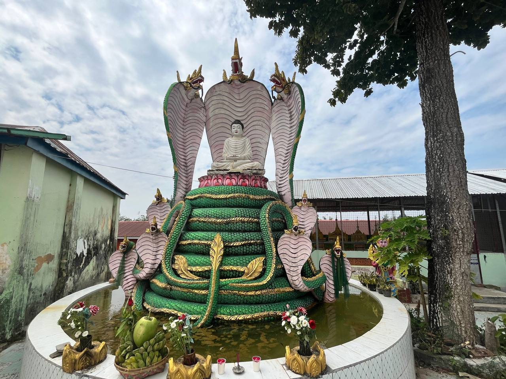
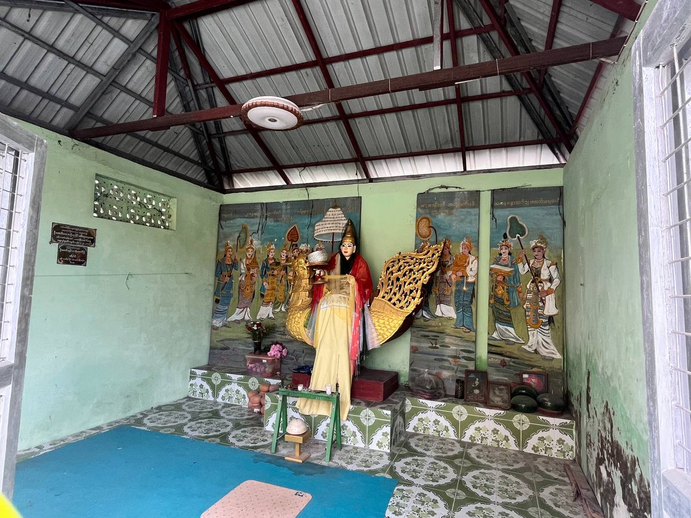
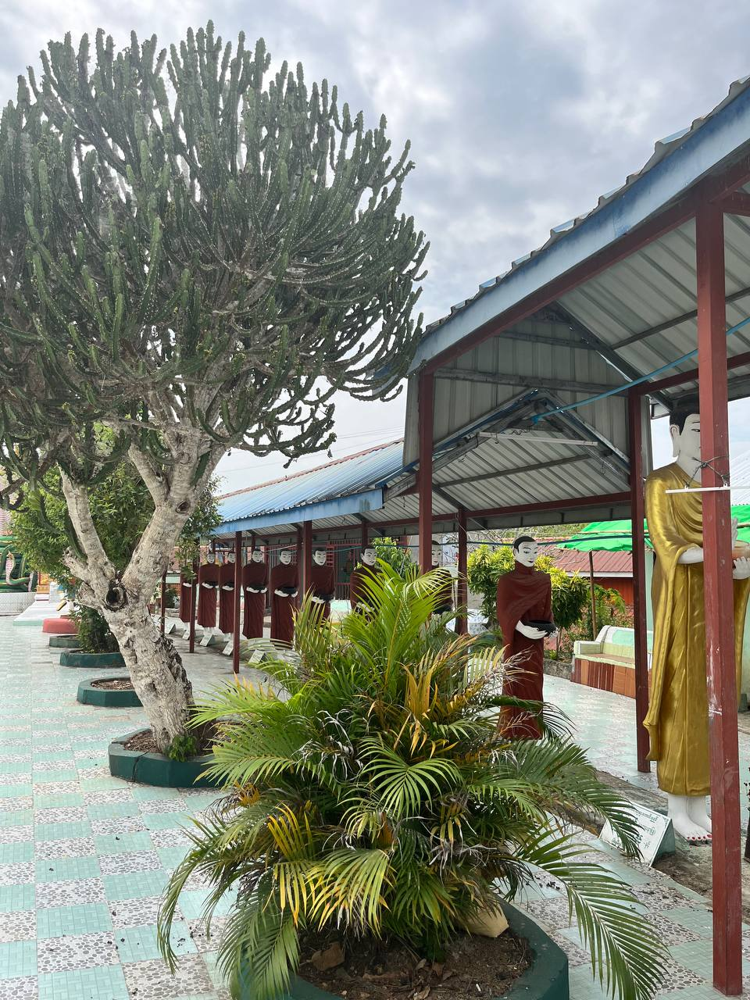

ပုသိမ်မြို့၏ ကျက်သရေဆောင် ရွှေမြင်တင်စေတီတော် သည် မြို့၏မြောက်ဘက်၊ ငဝန်မြစ်နှင့် ဧကမြစ်တို့ဆုံရာ အနီးရှိ တောင်ထိပ်ပေါ်တွင် တည်ရှိသည့် သမိုင်းဝင် စေတီတစ်ဆူ ဖြစ်သည်။ မြတ်စွာဘုရားလောင်း ကြက်မင်းဘဝဖြင့် ပျော်စံခဲ့ဖူးသော နေရာဖြစ်သည်ဟု အစဉ်အလာအရ ယုံကြည်ကြပြီး စေတီတော်၏ မူလဘွဲ့တော်မှာ သီရိဝဏ္ဏ ဖြစ်သည်။ ဤစေတီတော်ကို မြတ်စွာဘုရားရှင်၏ ဓာတ်တော်၊ မွေတော်များ ဌာပနာ၍ တည်ထားခြင်းဖြစ်ကာ ပုသိမ်မြို့ရှိ "အပြင်မုဌောလေးဆူ" (မြို့ပြင်ရှိ မုဌောစေတီလေးဆူ) အနက် တစ်ဆူအပါအဝင်လည်း ဖြစ်သည်။ စေတီတော်၏ တည်နေရာသည် မြစ်နှစ်သွယ်ဆုံရာ ရှုခင်းသာယာသော တောင်ကုန်းပေါ်တွင် ရှိသဖြင့် ဘုရားဖူးပြည်သူများ စိတ်အေးချမ်းသာစွာ ဖူးမြော်နိုင်သော နေရာတစ်ခုဖြစ်ပြီး နှစ်စဉ် ဘုရားပွဲတော်နှင့် ဆွမ်းဆန်စိမ်း လောင်းလှူပွဲများကို စည်ကားသိုက်မြိုက်စွာ ကျင်းပလေ့ရှိသည်။


